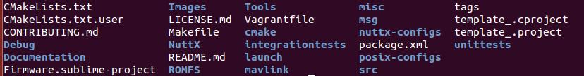
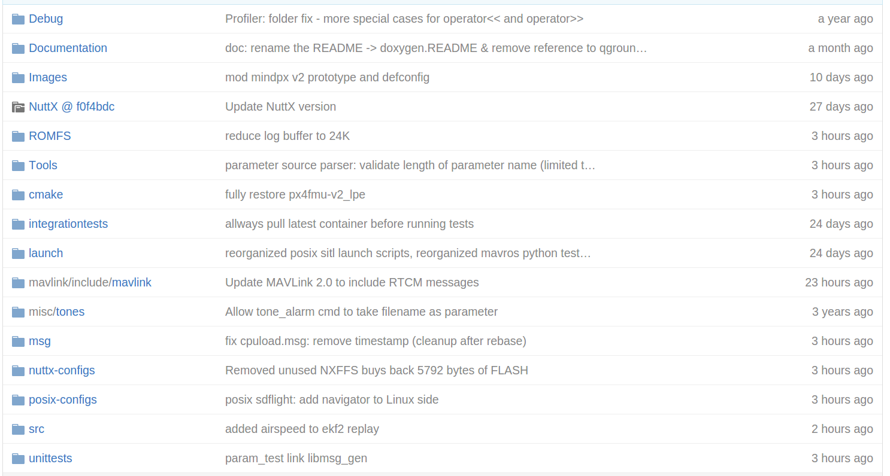
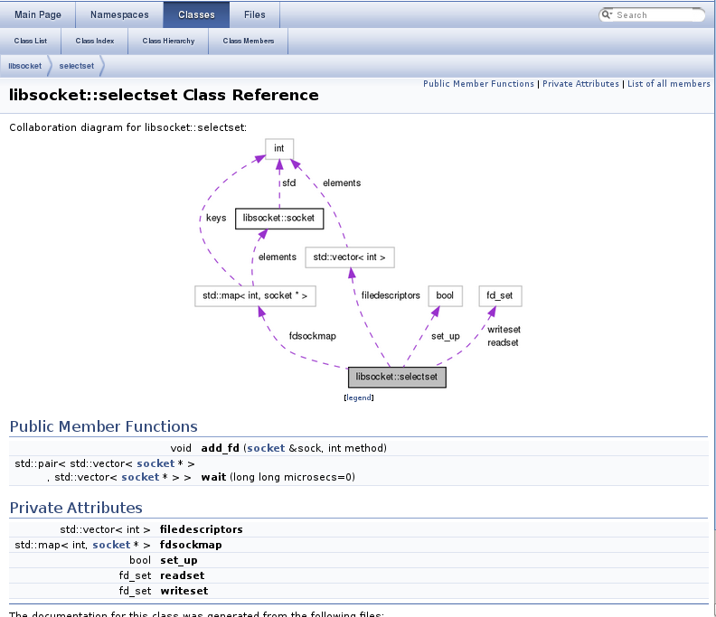

Introduction
안녕하세요 오랫만에 찾아뵙습니다. 항상 업데이트가 늦어서 미안한 마음으로 연재를 시작하겠습니다. 글 쓰는 재주가 그리 없지만, 'Pixhwak 까발리기' 글에 많은 관심을 가주시는 분들이 많아 너무 감사합니다. 그래서 많은 분들이 네이버 쪽지나 혹은 네이버 이메일로 문의를 주시는 분들이 계시는데, 제가 네이버 메일과 쪽지를 사용하지 않아서 거기에 올려주시는 글을 잘 읽지 못합니다. 그래서 가능하시면 오로카 계시판에 문의를 해주시면 최선을 다해 답변해드리도록 하겠습니다. 자.. 그럼 오늘은 Pixhawk 소스 코드에 대해 한번 알아보고자 합니다. 시작해볼까요... 홧팅!!
Pixhawk 분석에 앞서
많은 분들이 문의를 해주시는 것 중에 "Pixhawk 소스코드를 어떻게 분석하나요?" 입니다. 그 중에 어떤 분들은 처음부터 분석하기 위해 Makefile을 보신다거나, 처음 소스코드를 보면 일단 숨이 턱 막히지요. 처음부터 항상 주장하는 오픈소스를 잘 사용하라고 말씀드렸지만, 정작 오픈소스를 어떻게 잘 사용하는지는 설명을 못 드렸지요. 맞습니다.여러분들은 오픈소스를 잘 활용하라는 말을 많이 들었지만, "어떻게 사용하라는 얘기야"라고 불만이 있으셨을 것입니다. 그렇다고, 제가 말씀드리는 방법이 맞는 방법이라고 100% 확답할 수 없지만, 어찌되었든 제가 알고 있는 노하우로 설명드리겠습니다. 다시 앞으로 넘어가서 "어디서 부터 시작해야할까요?"부터 시작해보시죠. 뭐 사실 비법은 없습니다. 그렇지만, 제가 생각하고 있는 시작부분은 우선 사용해보라는 것입니다. 소스 코드 분석에 앞서, 우선 그 오픈소스를 사용해봅니다. 그렇면 대충 어떤 기능이 있고, 어떤 방법으로 동작되는지 알수 있습니다. 당연한 얘기인가요? 맞습니다. 그런데 꼭 아셔야할 것은 사용하면서 본인이 필요한 부분을 찾으시라는 것입니다. "드론이 어떻게 위치를 예측하는지 알고 싶어"라고 생각하고 계신다면, 그 부분을 많이 사용해 보세요. 그리고 그 기능에 대해 우선 많이 익히시길 바랍니다.
오픈소스를 잘 이용하셨다면, 이제 하셔야 할 부분은 전체 구조를 파악하는 것입니다. 루트 디렉토리에서 디렉토리 구조로 먼저 살펴보시길 바랍니다. 디렉토리 이름을 보면 대충 어떤 구조로 되어있구나를 알 수 있습니다. 실제 Pixhawk 구조를 보시죠.

대충 살펴보시면, Image, Tools, src, ROMFS, NuttX 등이 나오는 것을 보실 수 있습니다. 정확하게 무엇인지는 모르겠지만, src 디렉토리에는 실제 소스코드가 들어있을 것 같고, Tools에는 Pixhawk 펌웨어를 만들기 위한 도구들이 들어있을 것 같군요. NuttX라는 익숙한 용어도 나오구요. ROMFS도 나오네요... (전에 한번 설명드린 기억이...) 이걸 통해 우리는 대충 이런 구조로 되어있구나를 알 수 있습니다. 디렉토리 말고 파일만 봐도, 몇가지 단서를 알 수 있습니다. CMakeLists.txt를 보니, cmake를 사용한 것을 알 수 있고, Firmware.sublime-project를 보고, sublime text 툴을 IDE로 사용하나보다도 알 수 있습니다. launch를 보고 왠지 ROS와 연동될 것 같다는 느낌도 받으시구요. 지금까지 말씀드린 느낌이 오지 않으셨다면 많은 툴들에 대한 경험이 없으시기 때문입니다. 사실 상관없습니다. 그런데 많은 오픈소스를 살펴보다보면 금방 느낌이 오실 겁니다.
자 다음으로 하실 일은 README 파일을 찾아보시길 바랍니다. README 파일은 많은 정보가 함축되어 있을 가능성이 높습니다. 어떤 경우는 INSTALL도 있지만, README 파일에 모두 포함되는 경우도 많습니다. 그래서 이 README는 꼭 살펴보시고, 여기에서 부터 시작하시는 게 좋습니다. 설치하는 방법이라든지, 아니면, 버전 정보라든지 참고 사이트 등이 나오니깐요.
다음으로 가능하면 github에서 디렉토리 구조를 살펴보시길 바랍니다.  전에도 한번 말씀드렸지만, 오픈소스는 다른 오픈소스를 많이 사용하는 경우가 많습니다. 물론 단순한 오픈소스는 그렇지 않겠지만요. 그래서 다른 오픈소스를 사용하는 경우는 분석하는 부분에서 우선 제외시킵니다. 그냥 가져다 쓰는 거다라는 거지요. 만약 내가 분석하고자 하는 부분이 가져다 쓰는 오픈소스 부분이었다면 현재 분석하는 오픈소스에 대해 "여긴 아닌가벼" 하고 가져다 쓰는 오프소스를 분석하시길 바랍니다. github에서는 그런 가져다 쓰는 오픈소스 부분을 쉽게 알수 있습니다. 그림에서 보시면 회색으로된 디렉토리 그림이 보이시죠? NuttX 부분이네요.
NuttX@f0f4dbc
즉 NuttX는 다른 오픈소스에서 개발되고 있고, Pixhawk는 NuttX를 그대로 사용하겠다는 얘기입니다. 옆에 @f0f4dbc라고 적혀있는 부분은 git에서 다루는 버전 정보라고 보시면 될 것 같네요.
자 여기까지 되었으면 이제부터 본격적으로 오픈소스를 분석할 차례입니다. 우선 나무 보다는 숲을 먼저 보셔야 합니다. 전체적인 시스템 흐름을 아셔야 하는 거지요. 이건 말이 쉽지 정말 어려운 부분이긴 합니다. 많은 노하우와 많은 오픈소스 분석을 해보아야 알 수 있는 것이기도 하지요. 만약 관련된 사이트가 있다면 조금은 쉽습니다. 그 사이트에 튜토리얼이 있거나, 동작 방식이 나와있으면 쉽게 파악이 가능하지요. 만약 그런것도 없다. 그런경우는 우선 같은 개발 시스템을 설치하십시요. 여기서는 sublime 혹은 QTCreator를 사용하여 개발 환경을 맞게 설치하시고, 거기서 부터 시작해야 합니다. 절대 makefile이나 cmakelist 파일부터 차근차근 분석해보겠다라고 하시면 안됩니다. 오픈소스는 가져다 쓰는 게 목적이고, 그 중 내가 원하는 부분을 찾아 수정하는 게 최우선입니다. "오픈소스를 모조리 분석하겠어" 라고 생각하고 하나부터 차근차근 하는 방법은 그리 좋은 방법은 아닐 것 같습니다. 우선 내가 원하는 부분을 찾아 분석하고자 하면서 그 주변을 분석하고 전체를 분석해야지 처음부터 깊숙히 들어가 분석할려면 지쳐쓰러질 수 있다는 얘기입니다.
자 지금까지 말씀드리는 내용은 어쩌면 당연한 얘기일 수도 있을 것 같습니다. 그럼 이제 본격적으로 Pixhawk 소스 구조에 대해 알아보겠습니다.
Source 구조 분석석
앞에서 설명한 github 디렉토리 그림을 다시 사용하겠습니다.
우선 각 디렉토리에 대해 자세히 설명드리겟습니다. (저도 잘 사용하지 않은 부분도 많이 있지만 아는만큼 설명드리겠습니다. 많은 양해 부탁드립니다. 꾸벅 -- __)
Debug
Pixhawk는 JTAG를 이용하여 디버깅할 수 있고, 그런 설정 부분등이 있습니다. OpenOCD를 사용하고 있고, GDB를 사용합니다. 저는 아직 JTAG까지 사용해서 해보지는 못했습니다. 이미 bootloader가 있고, Firmware는 USB를 통해 시리얼로 업로드가 될 수 있기 때문에 알고리즘 개발이 위주라면 굳이 사용하지 않으셔도 될 것 같네요.
Documentation
Pixhawk는 내부 코드가 Doxygen 방법으로 주석이 달려있습니다. 예를 들면, 아래처럼 되어있습니다. Doxygen은 이런 주석을 분석하여 문서로 자동 생성해줍니다.
/**
* UTC offset (unit: min)
*
* the difference in hours and minutes from Coordinated
* Universal Time (UTC) for a your place and date.
*
* for example, In case of South Korea(UTC+09:00),
* UTC offset is 540 min (9*60)
*
* refer to https://en.wikipedia.org/wiki/List_of_UTC_time_offsets
*
* @unit min
* @min -1000
* @max 1000
* @group SD Logging
*/
PARAM_DEFINE_INT32(SDLOG_UTC_OFFSET, 0);
` 이런 주석이 doxygen을 통해 문서화 되면 PDF나 html방식으로 생성됩니다.  놀랍게도 아주 좋은 형태로 바뀌지요. 아. 이 그림은 예제입니다 Pixhawk 관련 문서는 아닙니다. 아쉽게도 Pixhawk는 문서화가 처음에는 잘 나가다가 최근 몇년동안은 업데이트를 하지 않는 것 같습니다. 하지만, 처음 보시는 분들은 한번 정도 내부 디렉토리 안에 있는 파일들을 열어 살펴보시길 바랍니다. 의외로 좋은 정보들이 많이 있으니깐요.
Images
Images는 Pixhawk를 컴파일해서 펌웨어 이미지를 만들기 위해 필요한 정보들이 들어있습니다. 전에도 말씀드렸지만 Pixhawk 하드웨어는 여러 종류가 있고, 각 하드웨어에 맞춰 필요한 정보등이 .prototype이라는 파일로 들어 있습니다. 이 정보를 사용하여 이미지를 만들면 .bin이라는 형태로 여기에 생성됩니다.
NuttX
NuttX는 Pixhawk가 사용하는 실시간 운영체제입니다. 이를 기반으로 Pixhawk가 동작되는데, 별도의 다른 오픈소스이니 우리는 그냥 사용만 하기로 합시다. 아 이런게 있나보다 생각하시고, 필요할때 가져다 쓰는 구조로 사용하세요. 나중에 하드웨어 속성 변경이 필요한 경우라든지 이런 경우는 NuttX 설정을 변경할 필요가 생기는데 그렇다고 소스 코드를 변경할 일은 거의 없습니다. 단순히 설정만 변경합니다. 설정은 nuttx-configs 디렉토리에서 변경하면 됩니다.
ROMFS
ROMFS는 ROM FileSystem 약어로 Pixhawk 펌웨어가 올라가면 파일 시스템이 생기는데 여기에 들어가는 파일들이 들어 있습니다. 정말 중요한 부분 중 하나이고, 나중에 이 부분을 잘 살펴보셔야 합니다. 여기에는 Pixhawk가 동작되는 처음 시작을 알리는 스크립트인 rcS가 들어있습니다. 나중에 이 부분도 함께 분석해보도록 하겠습니다. 그외에도 각 기체마다 필요한 설정값들, 파라미터 등이 여기에 포함되어 있습니다. 꼭 동작 방법을 숙지해야 하는 부분입니다.
Tools
Tools 디렉토리에는 스크립트 형태로 소스 컴파일 시 필요한 스크립트라든지, 코딩 스타일 체크라든지 등등의 스크립트가 들어 있습니다. 여기서 중요한 것은 앞으로 SITL을 위한 gazebo 에 필요한 코드들도 여기에 포함되어 있습니다. 이 부분도 나중에 함께 분석하실 것 같습니다. 이 코드는 별도 오프소스로 개발되고 있어서 NuttX와 같은 방식이라 보시면 될 것같습니다. 하지만 NuttX와 달리 우리는 이 부분 오픈소스를 조금은 건드릴 수 도 있습니다. 참고하세요
cmake
이 부분은 Pixhawk 내부 컴파일 절차등이 포함되어있습니다. 예를 들어 여러 모듈이 있고, 각 하드웨어에 따라 컴파일할 모듈들이 틀릴수 있다면, 이 부분에서 어떤 모듈을 빼고, 어떤 모듈을 더할 건지 등등이 여기에서 이루어집니다. 또한 내가 나만의 모듈을 만들었다면 그 모듈을 컴파일해서 추가하는 것을 하기 위해서는 이 부분에 내가 생성한 모듈 이름을 추가해야 합니다.
integrationtests
이 부분은 저도 정확히는 잘 모르겠지만, 컴파일 후 기본적인 기능에 대해 테스트하는 부분이라고 생각하시면 될 것 같습니다. 중요한 부분은 아니니 넘어가셔도 될 것 같네요
launch
launch 디렉토리는 SITL을 ROS와 연동하기 위해 개발된 부분입니다. 초창기에는 ROS를 통해 SITL을 이용했지만, 최근에는 ROS없이 SITL을 동작하도록 변경되고 있습니다. 하지만 여전히 ROS를 통해 이루어지는 방법도 진행이 되는것 같긴합니다. 저희는 ROS까지는 사용하지 않겠지만, 필요하신 분은 ROS 기반 SITL을 사용하셔도 무방합니다.
mavlink
mavlink 디렉토리는 지상국 시스템과 Pixhawk 기반 드론의 통신 프로토콜로 mavlink 라는 오픈소스 코드를 그대로 사용하고 있습니다. 앞에서 설명한 NuttX와 같은 방법이고 저희는 그대로 사용하면 됩니다. 만약 지상국 시스템과 Pixhawk의 통신 중에 나만의 통신 프로토콜 만들려면 어떻게 해야하냐구요? 그때는 당연히~ 이 부분을 수정하셔야 합니다. 기회가 되면 이 부분도 알려드리겠습니다.
misc
misc 디레토리는 그외에 분류안된 부분이 들어있다고 보시면 됩니다. 현재는 tones라는 소리 정의를 하고 있습니다. 소리 정의라고 하는 것은 기체 상태를 간단한 소리로 알려주는 방법인데 그 띠리리~ 이런 소리 정의를 말합니다.
msg
msg 디렉토리는 전에 말씀드린 uORB의 메세지 정의를 나타냅니다. 혹시 까먹으신 분들을 위해 uORB는 모듈과 모듈같의 통신을 하기 위한 기반 시스템이고, 모듈간 통신 프로토콜 정의가 바로 msg 디렉토리안에 들어있습니다. 예를 들어 actuator_armed 메세지를 보시면 다음과 같습니다.
uint64 timestamp # Microseconds since system boot
bool armed # Set to true if system is armed
bool prearmed # Set to true if the actuator safety is disabled but motors are not armed
bool ready_to_arm # Set to true if system is ready to be armed
bool lockdown # Set to true if actuators are forced to being disabled (due to emergency or HIL)
bool force_failsafe # Set to true if the actuators are forced to the failsafe position
bool in_esc_calibration_mode # IO/FMU should ignore messages from the actuator controls topics
텍스트 타입이고, 아래와 같은 구조로 되어 있군요.
[타입] [변수명] #주석
생각해보니, 텍스트 타입인데, 나중에 이 코드가 아래와 같이 header파일로 바뀌는군요.
/**
* @addtogroup topics
* @{
*/
#ifdef __cplusplus
struct __EXPORT actuator_armed_s {
#else
struct actuator_armed_s {
#endif
uint64_t timestamp;
bool armed;
bool prearmed;
bool ready_to_arm;
bool lockdown;
bool force_failsafe;
bool in_esc_calibration_mode;
#ifdef __cplusplus
#endif
};
누가 어떻게 이렇게 바뀌도록 하는 걸까요? 맞습니다. 바로 Tools에 스크립트가 이렇게 만들어 주는 겁니다. 대충 Tools 디렉토리의 스크립트가 하는 내용이 이해가 되시나요?
nuttx-configs
이 디렉토리는 NuttX에 대한 설정들이 포함되어 있습니다. 예를 들어 보지요. Pixhawk는 기본적으로 시리얼 baud rate이 57600으로 되어 있습니다. 그런데 이 부분을 115200으로 바꾸고 싶습니다. 이런 부분은 운영체제에서 관장하기 때문에 이 부분을 바꾸어주는 부분이 바로 nuttx-config 부분입니다.
posix-configs
posix-configs는 앞에서 설명드리는 nuttx-configs와 일맥 상통합니다. 여기서는 posix, 즉 우리가 주로 사용할 SITL을 위해 동작하게 될 우분투 운영체제가 할 일들이 나와있습니다. 실제적으로는 동작시킬 프로그램들 내용등이 여기에 포함되어 있습니다.
src
src 디렉토리.. 여러분 잘 아시겠지요? 우리가 파헤쳐야할 소스코드가 들어있는 디렉토리입니다. 사실 저도 여기를 모두 다 파헤치지 못해 일부만 설명드리겠지만, 어마어마한 코드들이 여기에 들어있습니다. 여기서 내가 필요한 모듈만 찾아서 분석하시면 됩니다. 이 부분은 워낙 방대하니 내부 디렉토리 구조를 한번 더 살펴보겠습니다. 디렉토리만 8개입니다.
$ ls
drivers examples firmware include lib modules platforms systemcmds
- drivers 디렉토리는 주로 센서 드라이버가 있습니다. 만약 추가적으로 센서를 내가 드론에 추가하겠다. 그럼 이 부분에 모듈을 추가하시면 됩니다.
- example 디렉토리는 예제 샘플 코드가 들어있습니다. 우리도 이 예제를 통해 모듈을 추가하는 방법을 살펴볼 예정입니다.
- firmware 디렉토리는 설치에 필요한 설정등이 있습니다. 그리 중요하진 않습니다. 실제 코드는 없습니다.
- include 디렉토리는 헤더 파일이 들어있는데, 모둔 헤더파일이 들어있는건 아니고, 기본이 되는 px4.h가 들어있습니다.
- lib 디레토리는 라이브러리들이 포함되어 있는 디렉토리입니다. 태스크로 수행되지 않고 태스크에 사용될 라이브러리들을 말합니다.
- modules 디렉토리는 우리가 주로 많이 다룰 핵심 모듈들이 있는 디렉토리입니다. 예를 들어 위치 예측 모듈 이라든지, 자세 제어 모듈 등이 여기에 포함됩니다.
- platforms 디렉토리는 nuttx와 posix 를 구분하여 각 운영체제에 맞춰 필요한 라이브러리들이 여기에 포함되어 있습니다. 이런게 필요한 이유는 각 플랫폼 마다 같은 기능인데, 함수 이름이 틀리는 경우가 있기 때문입니다.
- systemcmds 디렉토리는 시스템에 필요한 명령어에 대한 소스코드가 여기에 포함되어 있습니다. 예를 들어, version 정보를 보는 ver라는 명령어라든지 파라리터 정보를 보거나 수정하는 param 명령어등이 그 중 하나라고 볼 수 있습니다.
unittests
unittests 디렉토리는 말그대로 unit test를 하기 위한 코드들이 여기에 들어있습니다. 개발을 하다보면 unit test는 꼭해야하는데, 그런 부분이 여기에 들어있네요. 이걸 보면, "아. 그냥 코드를 중구난방으로 개발하는게 아니고, 뭔가 프로세스가 있구나"라고 생각하게 됩니다. 나중에 내부 코드를 보시면 그 코드 개발자의 철학도 어느정도 보이시게 될겁니다.
마치며
여러분 어느정도 Pixhawk 코드 구조를 확인하셨는데, 대략 어느 부분을 집중적으로 분석해야겠다는게 보이시나요? 오픈소스라는게 음.. 그냥 가져다 쓰면 되겠네.. 라고 생각할 수 있지만, 그리 쉽지 않다는 건 여러분도 잘 아실겁니다. 특히나 처음 접하실때는 정말 어렵지요. 하지만, 내가 원하는 부분만 잘 찾은다면, 어느정도 찾아갈 방향이 보이게 되고, 그 방향으로 가다보면, 전체 그림이 머리속에 들어오게 되어 분석하기 쉬워지게 됩니다. 그 전체 그림을 머리속에 집어넣기가 어렵지만, 여러분은 분명 잘 하실거라 믿어 의심치 않습니다. 그럼 절대 포기하지 마시고, 끝까지 한번 해보시길 바랍니다. (생각해 보니 저에게 할말이네요.. ㅜㅜ)